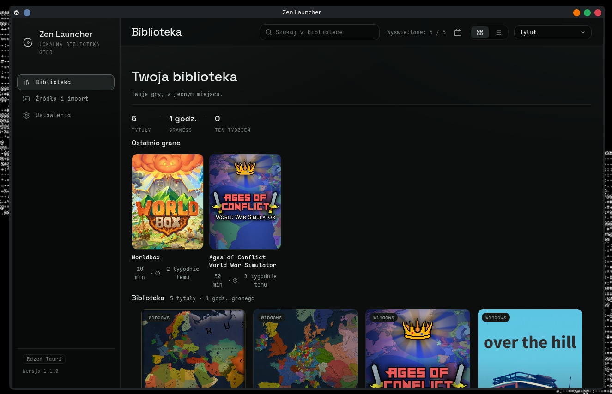
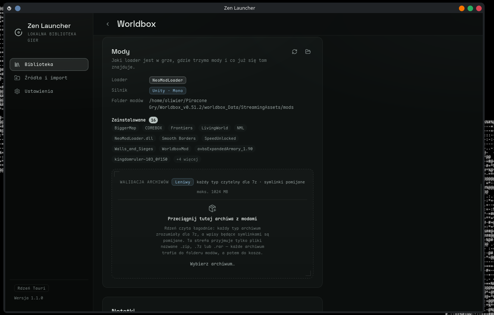
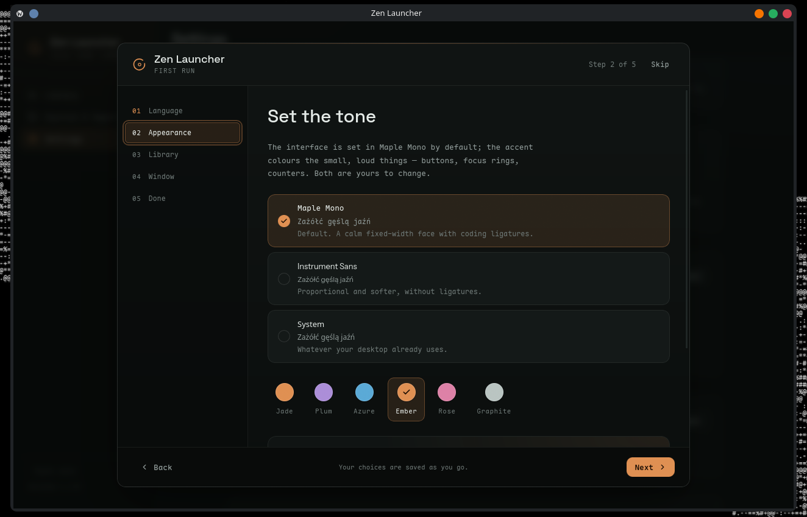

Zen Launcher
Zen LauncherZen Launcher
Local-first game library manager and launcher for Linux. Organize, launch and mod the games you already own — DRM-free purchases, freeware, plain folders and Windows titles through Wine. No store clients, no accounts, no telemetry.
At a glance
Library
Scan folders, cover art with monogram fallbacks, playtime and recents, favorites, notes, tags, hiding.
Launch
Per-game options, Wine per-game prefix, GameMode and MangoHud, session recording.
Mods
Loader detection (BepInEx, MelonLoader, CLEO, Script Hook, Frosty and more), GitHub releases, zip/7z/rar drops.
Multiplayer
SA-MP, FiveM, MTA badges; SA-MP host, port and nickname options.
Big Picture
Console-style, gamepad-friendly layout reusing the same library data.
Saves
Auto-backup before sessions plus version history and one-click restore.
Screenshots



Features in detail
Library
- Scan folders you point it at
- Cover art via Steam search with monogram fallbacks
- Playtime and recents tracking
- Favorites, notes, tags, hiding
- Metadata from Steam, SteamGridDB, ScreenScraper, local files
Launch
- Per-game options: executable, arguments, working directory, environment
- Windows titles via Wine with a managed prefix per game
- GameMode and MangoHud toggles
- Every session recorded with duration and exit code
Mods
- Detects BepInEx 5/6, MelonLoader, NeoModLoader, MSC Mod Loader, tModLoader
- CLEO 5/4 & Redux, Script Hook IV/V, Frosty
- Install loaders from GitHub releases
- Drop zip / 7z / rar archives onto a game
Multiplayer clients
- SA-MP, FiveM, MTA badges
- SA-MP host, port and nickname options
- Maps to client launch flags
Big Picture
- Console-style, gamepad-friendly layout
- D-pad / shoulder navigation
- Reuses the same library data
Saves
- Auto-backup before each session
- Versioned snapshots per game
- One-click restore
- Auto-detected or user-defined save paths
Metadata & artwork
- Steam title match, SteamGridDB art, ScreenScraper for retro
- Local files and manual override always available
- All fetches cached locally; UI never blocks on network
Settings & first-run
- First-run wizard: language, font, accent, default view, window behavior
- English + Polish interface from day one
- Dark theme; Maple Mono default, Space Grotesk headings
- Accent presets and re-runnable wizard
Install
AppImage (recommended)
Works on any glibc-based distro. Grab the latest release from Releases, then:
chmod +x "Zen Launcher_*.AppImage"
./"Zen Launcher_*.AppImage"Flatpak
Flathub submission is in progress. Until then, build the Flatpak yourself from the manifest in flatpak/.
Build from source
Arch / CachyOS example; equivalent packages exist on other distros:
sudo pacman -S --needed webkit2gtk-4.1 patchelf
bun install
bun run tauri dev # full app
bun run dev # frontend only, mock IPCTech stack
| Area | Choice |
|---|---|
| Platform | Linux first (Arch / CachyOS dev target) |
| Shell | Tauri 2 (Rust core + WebView UI) |
| Frontend | React + TypeScript + Vite |
| Database | SQLite (rusqlite, bundled) |
| Config | TOML (~/.config/zen-launcher/config.toml) |
| Packaging | AppImage |
| License | MIT |
Roadmap
- Flathub publish (with bundled Wine for Windows titles inside the sandbox)
- More multiplayer client adapters
- Scheduled loader update checks instead of on-demand only
- Cover art from more providers